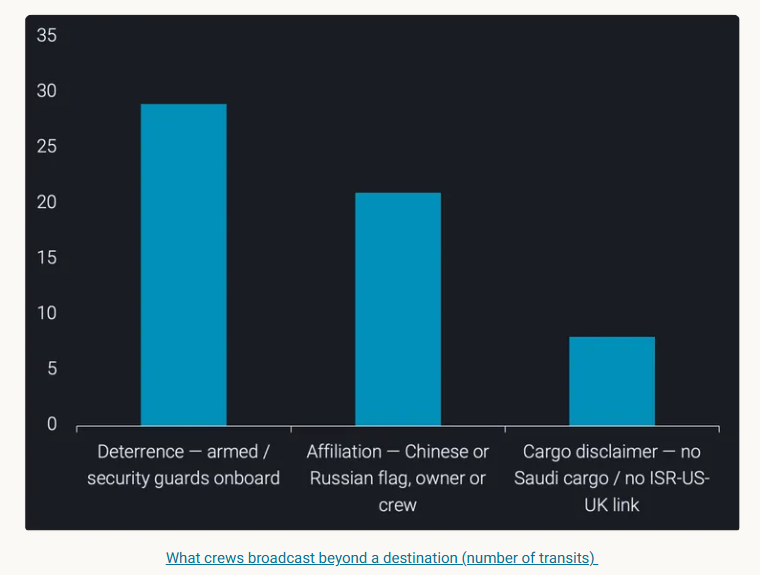

Since the 20 July blockade, four in five tankers passing Bab el-Mandeb are messaging via the AIS destination field to dodge Houthi targeting.
Since the July 20 blockade announcement, the AIS destination field has stopped naming a port and started making a case. The messages read as pleas to whoever is watching — but cross-referenced against tracked cargo origin, the vessels with the most to fear mostly aren't the ones sending them.
The destination field on a ship's AIS transponder is meant to hold a port. A three-letter locode, a berth, a country — a machine-readable answer to "where are you going." For years it has quietly held other things too: "FOR ORDERS" from a vessel that hasn't been sold a cargo yet, the odd typo, the odd joke. What it is holding right now, in the two-mile-wide funnel at the southern mouth of the Red Sea, is something closer to a placard held up at a window.
In the thirteen days after the July 20 closure announcement, we logged 175 tanker transits of the Bab el-Mandeb strait. 141 of them — 81% — carried free text in the destination field beyond a plain port name. That share on its own is unremarkable; crews fill the field with all sorts. What is remarkable is the content. Strip out the genuine port entries and 55 transits carried an explicit signal: armed guards aboard, a flag or crew nationality, a statement about what the cargo is or, more often, what it is not.
None of them are addressed to a port authority. They are addressed to whoever is reading AIS from the Yemeni coast.
We have watched this behaviour before. Through the Hormuz tension earlier in the year the same field filled with the same grammar — "CHINA OWNED," "RUSSIAN CREW," "ALL CREW CHINESE" — vessels flagging a Chinese or Russian tie on the bet that no one would risk striking a ship linked to Beijing or Moscow. Bab el-Mandeb is running the identical playbook, only tuned to a different threat model. The signals here are not generic. They are a direct read of who the Houthis are and are not targeting.
The signalling messages sort cleanly into three intents. Each is an attempt to move the vessel out of a target set, and each leans on a different lever — force, identity, or cargo.

Deterrenceis the loudest and the least specific: 29 transits announced armed or private security teams aboard. It says nothing about the ship and everything about the cost of boarding it — a message aimed at interdiction and hijack rather than a stand-off strike, and one a vessel can broadcast whether or not it is true.
Affiliationis the more telling category. 21 transits volunteered a nationality — a flag, a beneficial owner, a crew list — and it was overwhelmingly Chinese. "CHINA CREW & OWNER," "ALL CREW CHINESE," "CHINA / FLAG / OWNR / CREW," "ZHOUSHAN, CHINA." A handful leaned Russian instead: "RUSSIAN CREW ONBOARD," "RUSSIA CO ON BOARD." The logic is the same one we saw at Hormuz, only the actor changes: there the concern was Iran, here it is the Houthis. In both cases the threatening party has largely left Chinese- and Russian-linked ships alone, so a vessel names the tie and hopes the association carries over.
Cargo disclaimersare the rarest and the sharpest. Eight transits used the field to state what the cargo is not: "SUEZ NO SAUDI CARGO," "NON SAUDI CARGO," "NROTTERDAM-NLRTM NO SAUDI CARGO," and the bluntest of them, "NO LINK ISR/US/UK." These are the messages that give the game away, because they name the exact thing the sender is trying not to be caught carrying.
The disclaimers come from the wrong ships
Here is where the destination field stops being a curiosity and starts being an intelligence problem. A self-declared message is only as good as the sender's honesty, so we ran each signalling transit against Vortexa's tracked cargo origin. Two findings fall straight out.
First, the "no Saudi cargo" disclaimers are almost entirely being broadcast by vessels that were never carrying Saudi crude in the first place — cargoes loaded in Sudan, in India, in Southeast Asia. A ship lifting Indian product for Rotterdam has no Saudi cargo to disclaim; it is disclaiming pre-emptively, distancing itself from a flow it was never part of, because the field is free and the downside of silence feels large. The disclaimer is insurance, not confession.
Second — and this is the finding — the vessels that are lifting Saudi crude behave nothing like the ones talking about it. They largely refuse to play the messaging game at all.
The ships with genuine Saudi cargo don't argue their case in the destination field. They turn around, switch off, or hide behind a Chinese owner.
The contrast is the whole story.Saudi-origin cargoeither doesn't attempt the strait or crosses without a signature by going dark through the chokepoint. Of the eight that did cross openly, most led with their ownership or destination rather than the cargo — "CHINA CREW & OWNER," "CHINA OWNER & CREWS," "ZHOUSHAN, CHINA." Several of these are genuine Chinese-owned VLCCs running Saudi crude to China, a routine trade; the field can't tell us whether any given claim is real, and we're not asserting it isn't. The point is the selection — these vessels chose to broadcast the Chinese tie and leave the Saudi origin unmentioned. Advertise the ownership, omit the cargo: that choice is the signal.
Russia-origin cargodoes the opposite. Not one Russian-origin transit U-turned. Thirty-five of forty crossed lit up, and rather than hide the connection, several advertised it — "RUSSIAN CREW ONBOARD," "RUSS. CARGO ON BOARD." Under this specific threat model a Russian tie is protective, so it gets worn on the outside. The same attribute that a Saudi-laden vessel spends the field trying to manufacture, a Russian-laden vessel simply states.
Why the cross-reference matters
The destination field is self-reported and unverifiable at the source — "CHINA OWNED" and "NO SAUDI CARGO" are claims, and some may be misdirection. The value is not in the message but in checking it. Independently tracked origin turns a wall of unverifiable placards into a readable signal: it tells you which disclaimers are honest, which are pre-emptive cover, and — most usefully — which vessels chose to say nothing because the truth was the thing they most needed to hide.
What the field is really telling us
Put together, the destination field at Bab el-Mandeb has become a low-bandwidth channel for one message with three dialects: please don't target me. The specific words a crew reaches for are a confession of what they believe puts them at risk. Armed guards for the fear of boarding. A Chinese owner for the fear of a strike. "No Saudi cargo" for the fear that the flow itself is the target.
And because the words track the fear, the aggregate is a live map of the post-20-July threat perception — assembled not from what analysts infer but from what masters chose to type. It says the market believes Saudi-linked cargo is the bullseye, that a Chinese or Russian tie is a shield, and that the shield is worth claiming whether or not it would hold up. That belief is now visible transit by transit, in a field that was only ever meant to name a port.
For anyone screening this chokepoint, the practical read is simple. Treat the destination field as sentiment, not fact — then let tracked cargo origin decide which of these vessels is telling the truth, which is buying cheap insurance, and which one went quiet at exactly the moment it had the most to say.
Data Source:Vortexa